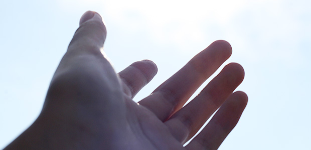

子どもが幼いときはできる限り一緒に遊び、物語を語ったり歌を歌ったり走り回ったりして楽しみたい。
子どもがまとわりついて抱っこをせがんだり、回らない舌で話しかけてきて、疲れていて面倒くさいときでも出来る限り相手をしてあげたい。
どんなに忙しいときでも、すき間を縫うように子どもたちと触れ合う時間を見つけ、その時は真剣に遊ぶようにしたい。
絵本を読んであげたり子どもたちが話したがることを熱心に聞いてあげたい。
幼い子はエネルギッシュに遊び回り、何でも話したがり何にでも興味を持つ。
「あぁ～少し放っておいてくれよ」と思っても放ってはくれない。
転んで大泣きしたり、熱を出したりと子どもに振り回されることも少なくないけど、それでも親としての喜びを感じている。
小学校に上がる前までのこの時期、親も子育てにほんろうされながら人生で初めて人（子ども）から全面的に信頼される実感と喜びを得ている。
だから子どもに感謝しなければならない。
日々子どもの成長を見る喜び。
人の親になって改めて知る親への感謝。
子どもによって親になれたこと。そこから得る自信。
そして何よりも子どもからたくさんのエネルギーをもらい、生きる目的を与えてもらったこと。
これだけでも子育ての苦労の大半は返してもらったと思いたい。
でもこれは後に思い返した時に思うもの。
何時の頃からか。小学校高学年くらいか。
子どもは徐々に親から離れていく。最初はゆっくりと。そして中学に入ると急速に。
外から帰っても「ただいま」も言わず部屋に直行し食事のとき出て来てまた部屋にこもる。
「今日学校どうだった？」と聞こうものなら、ウザそうに
「別に～」と気のない返事。
外出する時もたいていは友達と。親とはめったに出かけない。
たまに一緒に外出しても居心地悪そうにしている。
息子は母と出かけたがらず、娘は父と出たがらない。
親と一緒のところを知り合いに見られるのが何よりも恥ずかしいし嫌なのだ。
親はそんな時一抹のさびしさを感じる。
つい最近、ついこの間まであんなに楽しそうにお出かけしていたのに…。
思春期。それはもう大人への入り口だ。
彼らは既に無邪気な幼子ではない。
小さな大人なのだ。
そんな彼らを色々心配するが親にできることは少ない。
でも親は心配を手放せない。
だってつい最近まで子どもは自分の庇護を求めていたではないか。
もうそんな必要はないというのか。
親は気づかなければならない。心配を必要としているのは親の方であることに。
いつまでも子どもの親であることに執着し、そこに生きる価値を見い出し続けている自分に。
実は親は気づいていない。
子どもはある意味でもう巣立ちを始めていること。
既に必要なのは親ではなく、同世代の友人や家庭外での人間関係。
そこで彼らなりに傷ついたり悩んだりしながらも自立への旅立ちを始めている。
だから子どもたちが起こすトラブルやあつれき、失敗や問題行動も「心配」な出来事なのではない。
気づきの光に照らしてみればそれらの「困った問題」も、大人へと至る大切な学びの経験に過ぎないことがわかる。
親は知らなければならない。
子どもには子どもの人生があることを。それは今始まったばかりの危うい足取りに見えるとしても幼い日のように親は手取り足取りすることはかなわないのだという事実を。
思い出そう。
あなたも私も皆そうやって大人になってきたことを。
だから手放そう。
手放すと子どもはどうなってしまうのか心配だったり、断崖絶壁から飛び降りるような恐怖を感じるなら、
あなたは子どもに執着し過ぎている。
子どもの親であるというアイデンティティにしがみついている。
大丈夫だから。思い切ってその執着に気づき認め、手放そう。
実は手放しても日常の風景は変わらない。
相変わらずあなたは子どものために食事を作り、洗濯し、世話を焼き続けるだろう。
子どもたちも部屋にこもり、ぶっきらぼうで親と外出したがらない。
しかし心配をやめた分だけ子どもたちは身軽になる。軽やかになり自由を感じるだろう。
それと同時に責任も感じる。
信じて手放すとはそういうこと。
信じて手放すとそのような変容が起こる。
その時親は気づくだろう。
幼き日に子どもたちに惜しみなく与えた愛情とエネルギーの交換が、子どもたちの自立へ向けた旅立ちの大きな原動力。
勇気という原動力になっていたことに。